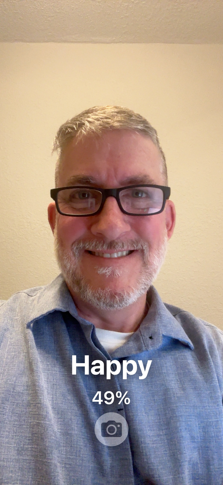
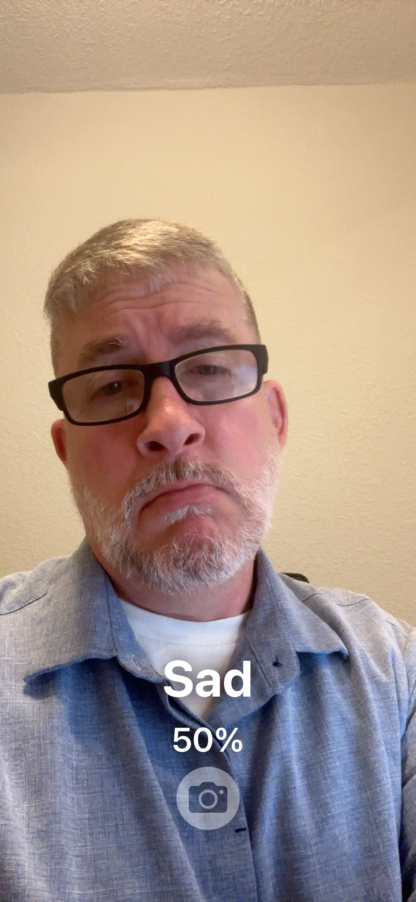
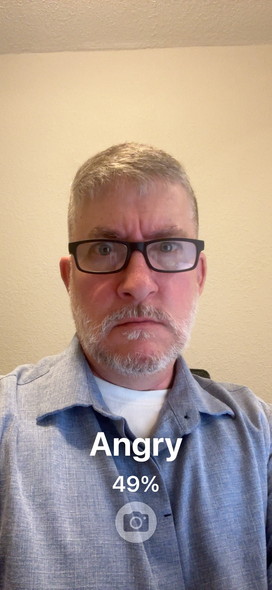
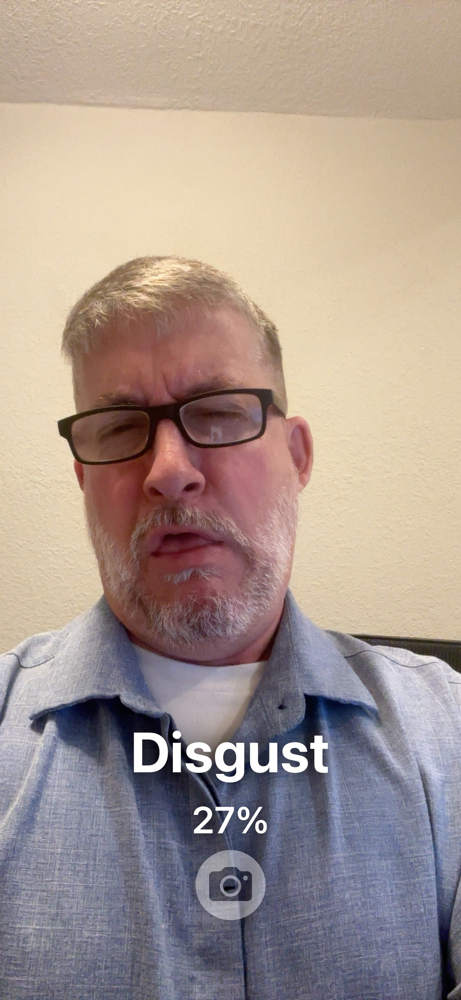
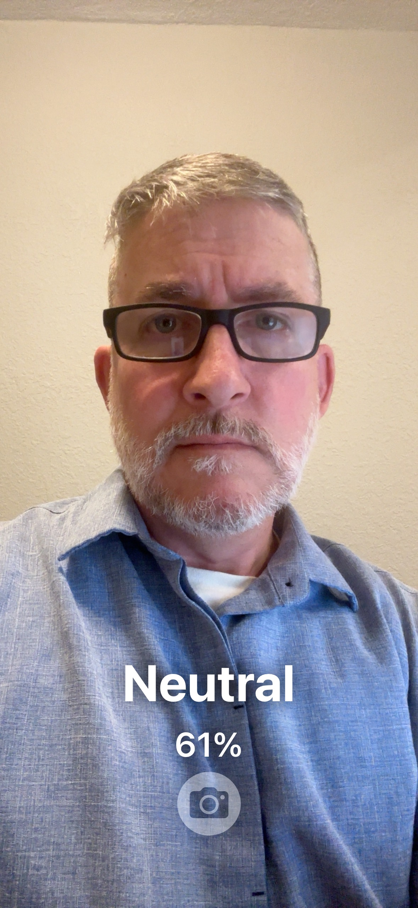
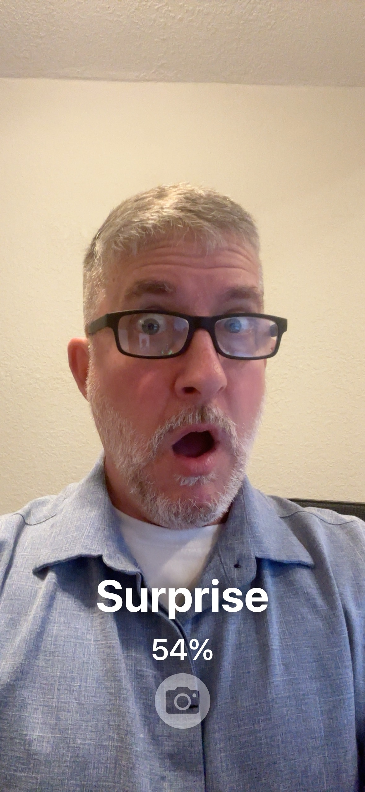

VisionAI: Emotion Detection
Overview
On-device
Real-time
Privacy-first
TFLite + SwiftUI
Project overview
Mobile app that classifies facial emotions in real time using a TensorFlow Lite model in SwiftUI. Runs fully on-device for speed and privacy.
My role: Strategy → architecture → build → test
Trained the model with FERPlus and RAF-DB, optimized for TensorFlow Lite, and integrated live camera inference in SwiftUI.
Technical details
See below
Business impact
Delivers quick emotion signals to guide UX decisions and personalization without sending video off the device.
Scalability
Extend to sentiment tracking, adaptive UI feedback, and AR/VR analysis.
Demo








If I have to resort to acting for a living, that’s not going to be good for anyone. Just saying.
Technical details
TensorFlow Lite
SwiftUI
FERPlus
RAF-DB
Xcode
- TensorFlow Lite – fast, lightweight inference optimized for mobile
- SwiftUI – live camera pipeline and real-time UI updates
- FERPlus / RAF-DB – diverse emotion datasets for model training
- Core ML bridge – future path to Apple-native model tooling
- Xcode – build, signing, and on-device deployment for iOS testing
TensorFlowKerasOpenCV
NumPyPandasTensorFlow LiteXcode